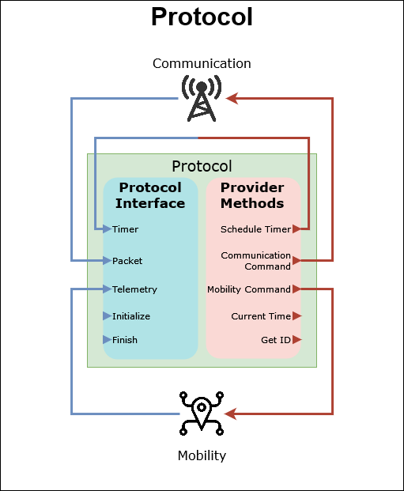

Creating a protocol
Info
This guide will walk you through the process of creating a protocol and executing it using the simulator using prototype-mode.
Understanding a protocol
Protocols are classes that implements your algorithms main logic. The class is called protocol because it defines the behaviour protocol of the node. If you are satisfied with the simulation environment provided ready to use by GrADyS-SIM NextGen, this is the only class you need to code. You can use your protocol on any simulation environment. We will be using prototype mode to run a protocol within a python environment.
Before building a protocol it is important to have a basic idea of what you are building. Protocols are classes that implement node behaviour on an event based environment. Event based means that you will program your logic in a reactive way. In other words the program's execution flow will only run code within your class when something happens to the node whose logic you are programming. This "something" can be a timer firing, a message being received or some information about your mobility being transferred to it. This is very similar to how user interfaces are build, they lay idle and react to user inputs.

Protocols have to inherit from the IProtocol class and implement the protocol
interface this base class defines. These methods are called to react to some
event relevant to the network node hosting your protocol. The logic of your
protocol is implemented in these reactions.
The protocol class itself does not handle communication or mobility, these are handled externally. Think of the protocol as the brains of the operation, issuing commands to these external modules that actually perform the actions.
In order to issue these commands they have use to a set of methods accessible
through a IProvider instance which is available through self.provider
defined in the protocol base class. These methods are how the protocol interacts
with its environment. Methods are available to send messages, move to specific
places, schedule timers and more.
Building our first protocol
import logging
from gradysim.protocol.interface import IProtocol
from gradysim.protocol.messages.telemetry import Telemetry
class CounterProtocol(IProtocol):
counter: int
def initialize(self):
# We initialize our counter at zero
self.counter = 0
# Using the protocol's provider to schedule a timer
self.provider.schedule_timer(
"", # We don't care about the name since we're only going to use one
self.provider.current_time() + 1 # Scheduling it 1 second from now
)
def handle_timer(self, timer: str):
# Every time the timer fires we increment the counter
self.counter += 1
# And schedule a new one
self.provider.schedule_timer(
"",
self.provider.current_time() + 1
)
def handle_packet(self, message: str):
# We won't be receiving packets, so we don't care about this
pass
def handle_telemetry(self, telemetry: Telemetry):
# We don't care about mobility, so we are ignoring the received telemetry
pass
def finish(self):
# We print our final counter value at the end of the simulator
logging.info(f"Final counter value: {self.counter}")
The protocol above is very simple. All it does is use the provider methods available to the protocol to schedule a timer that fires every second. When this timer fires the protocol increments a counter and sets the timer again.
Info
Timers are a very important part of protocols. They are used to schedule events that will happen in the future. This is a very common pattern in distributed systems. Timers can be scheduled using the IProvider.schedule_timer method and cancelled using the IProvider.cancel_timer method.
Now that we have created a protocol, we just have to execute it. As mentioned we will be using prototype mode for this example. Creating a simulation is preferably done through the SimulationBuilder class. This class presents a simple API for instantiating python simulations.
from counter_protocol import CounterProtocol
from gradysim.simulator.handler.timer import TimerHandler
from gradysim.simulator.simulation import SimulationBuilder, SimulationConfiguration
def main():
# Configuring the simulator. The only option that interests us
# is limiting the simulator to 10 real-world seconds.
config = SimulationConfiguration(
duration=10
)
# Instantiating the simulator builder with the created config
builder = SimulationBuilder(config)
# Calling the add_node function we create a network node that
# will run the CounterProtocol we created.
builder.add_node(CounterProtocol, (0, 0, 0))
# Handlers enable certain simulator features. In the case of our
# simulator all we really need is a timer.
builder.add_handler(TimerHandler())
# Calling the build functions creates a simulator from the previously
# specified options.
simulation = builder.build()
# The start_simulation() method will run the simulator until our 10-second
# limit is reached.
simulation.start_simulation()
if __name__ == "__main__":
main()
Danger
This pattern of defining a main function and running it only if the file is being executed directly is required if you are using the VisualizationHandler as it will spawn a new process to run the visualization thread. We will use the visualization handler later so we are preparing for it. Read more about this in the handler's documentation.
Info
A Simulator instance is returned
from the build method of the
SimulationBuilder class.
This instance is used to run the simulation. Both the
Simulator.start_simulation
and the Simulator.start_simulation
methods can be used to run the simulation. The first method will run the
simulation until it ends, while the second will run it for a single iteration
and return True if the simulation is not done.
Running the file above we will notice the following output on our terminal:
INFO [--------- Simulation started ---------]
INFO [--------- Simulation finished ---------]
INFO [it=0 time=0:00:00 | Node 0 Finalization] Final counter value: 10
INFO Real time elapsed: 0:00:00.000195 Total iterations: 10 Simulation time: 0:00:10
We can see that the simulation ran for 10 simulation seconds which took 0.000195 real-world seconds to execute. In that time we ran 10 simulation iterations. Remember that our CounterProtocol sets a timer for every second, so the number of iterations is expected. What is also expected is the "Final counter value" logged, which is 10.
Adding Communication
The last example, while useful to demonstrate how a protocol is the class that implements your logic in an event-based manner, didn't demonstrate one of the main features of the simulator: communication. One of the biggest challenges of building distributed systems is that they rely on asynchronous communication to share information between nodes.
GrADyS-SIM NextGen will help you build these kinds of systems by providing support for communication between network nodes. Nodes share messages with each other by using communication commands that instruct their mobility modules to perform actions like broadcasting a message, sending one to a specific node or others.
import logging
from gradysim.protocol.interface import IProtocol
from gradysim.protocol.messages.communication import CommunicationCommand, CommunicationCommandType
from gradysim.protocol.messages.telemetry import Telemetry
class CounterProtocol(IProtocol):
sent: int
received: int
def initialize(self):
# We initialize two counters: one for sent and one
# for received messages
self.sent = 0
self.received = 0
# Using the protocol's provider to schedule a timer
self.provider.schedule_timer(
"", # We don't care about the name since we're only going to use one
self.provider.current_time() + 1 # Scheduling it 1 second from now
)
def handle_timer(self, timer: str):
# Every time the timer fires we increment the counter
self.sent += 1
# Creating a new communication command that will instruct the mobility module
# to broadcast a message
command = CommunicationCommand(
CommunicationCommandType.BROADCAST,
message="" # Content is irrelevant, we are only counting messages
)
# Sending the command
self.provider.send_communication_command(command)
# Scheduling a new timer
self.provider.schedule_timer(
"",
self.provider.current_time() + 1
)
def handle_packet(self, message: str):
# This time we care about received messages, we increment our received
# counter every time a new one arrives.
self.received += 1
def handle_telemetry(self, telemetry: Telemetry):
# We don't care about mobility, so we are ignoring the received telemetry
pass
def finish(self):
# We print our final counter value at the end of the simulator
logging.info(f"Final counter values: "
f"sent={self.sent} ; received={self.received}")
To demonstrate communication we are now creating a simulation populated by several network nodes. All of these nodes are periodically sending messages to all the other ones. Each node keeps track of how many messages it has received and sent.
from counter_protocol import CounterProtocol
from gradysim.simulator.handler.communication import CommunicationHandler
from gradysim.simulator.handler.timer import TimerHandler
from gradysim.simulator.simulation import SimulationBuilder, SimulationConfiguration
def main():
# Configuring the simulator. The only option that interests us
# is limiting the simulator to 10 real-world seconds.
config = SimulationConfiguration(
duration=10
)
# Instantiating the simulator builder with the created config
builder = SimulationBuilder(config)
# Calling the add_node function we create a network node that
# will run the CounterProtocol we created.
for _ in range(10):
builder.add_node(CounterProtocol, (0, 0, 0))
# Handlers enable certain simulator features. In the case of our
# simulator all we really need is a timer.
builder.add_handler(TimerHandler())
builder.add_handler(CommunicationHandler())
simulation = builder.build()
simulation.start_simulation()
if __name__ == "__main__":
main()
The result of executing this protocol is the following:
INFO [--------- Simulation started ---------]
INFO [--------- Simulation finished ---------]
INFO [it=0 time=0:00:00 | Node 0 Finalization] Final counter values: sent=10 ; received=90
INFO [it=0 time=0:00:00 | Node 1 Finalization] Final counter values: sent=10 ; received=90
INFO [it=0 time=0:00:00 | Node 2 Finalization] Final counter values: sent=10 ; received=90
INFO [it=0 time=0:00:00 | Node 3 Finalization] Final counter values: sent=10 ; received=90
INFO [it=0 time=0:00:00 | Node 4 Finalization] Final counter values: sent=10 ; received=90
INFO [it=0 time=0:00:00 | Node 5 Finalization] Final counter values: sent=10 ; received=90
INFO [it=0 time=0:00:00 | Node 6 Finalization] Final counter values: sent=10 ; received=90
INFO [it=0 time=0:00:00 | Node 7 Finalization] Final counter values: sent=10 ; received=90
INFO [it=0 time=0:00:00 | Node 8 Finalization] Final counter values: sent=10 ; received=90
INFO [it=0 time=0:00:00 | Node 9 Finalization] Final counter values: sent=10 ; received=90
INFO Real time elapsed: 0:00:00.004000 Total iterations: 1000 Simulation time: 0:00:10
Process finished with exit code 0
We can see that every node's timer fired 10 times, as expected from our last protocol. The interesting part is seeing that each node received 90 messages, 1 from every node other then itself 10 times.
Configuring the communication medium
An important part of developing distributed systems is thinking about resiliency. A lot of times communication is flawed and messages fail to reach their destination. In order to enable developers to validate their protocols the communication handleris configurable to enable certain restrictions to communication, like adding delay, limiting the range of communication and adding failures.
from counter_protocol import CounterProtocol
from gradysim.simulator.handler.communication import CommunicationMedium, CommunicationHandler
from gradysim.simulator.handler.timer import TimerHandler
from gradysim.simulator.simulation import SimulationBuilder, SimulationConfiguration
def main():
# This time we will be running the simulator for a longer time
# to help us visualize the effect of the medium configurations.
config = SimulationConfiguration(
duration=100
)
builder = SimulationBuilder(config)
# Adding 10 nodes all on (0, 0, 0)
for _ in range(10):
builder.add_node(CounterProtocol, (0, 0, 0))
# Adding a node far away, outside communication range from the others
builder.add_node(CounterProtocol, (50, 0, 0))
builder.add_handler(TimerHandler())
# Configuring a communication medium with limited transmission range,
# 1-second delay for message delivery and a 50% failure rate
medium = CommunicationMedium(
transmission_range=30,
delay=1,
failure_rate=0.5
)
builder.add_handler(CommunicationHandler(medium))
# Calling the build functions creates a simulator from the previously
# specified options.
simulation = builder.build()
# The start_simulation() method will run the simulator until our 10-second
# limit is reached.
simulation.start_simulation()
if __name__ == "__main__":
main()
INFO [--------- Simulation started ---------]
INFO [--------- Simulation finished ---------]
INFO [it=0 time=0:00:00 | Node 0 Finalization] Final counter values: sent=100 ; received=434
INFO [it=0 time=0:00:00 | Node 1 Finalization] Final counter values: sent=100 ; received=442
INFO [it=0 time=0:00:00 | Node 2 Finalization] Final counter values: sent=100 ; received=476
INFO [it=0 time=0:00:00 | Node 3 Finalization] Final counter values: sent=100 ; received=446
INFO [it=0 time=0:00:00 | Node 4 Finalization] Final counter values: sent=100 ; received=430
INFO [it=0 time=0:00:00 | Node 5 Finalization] Final counter values: sent=100 ; received=450
INFO [it=0 time=0:00:00 | Node 6 Finalization] Final counter values: sent=100 ; received=444
INFO [it=0 time=0:00:00 | Node 7 Finalization] Final counter values: sent=100 ; received=438
INFO [it=0 time=0:00:00 | Node 8 Finalization] Final counter values: sent=100 ; received=443
INFO [it=0 time=0:00:00 | Node 9 Finalization] Final counter values: sent=100 ; received=450
INFO [it=0 time=0:00:00 | Node 10 Finalization] Final counter values: sent=100 ; received=0
INFO Real time elapsed: 0:00:00.026000 Total iterations: 5553 Simulation time: 0:01:40
Let's analyse these numbers. We have 11 nodes sending messages for 100 seconds so without any restrictions we would expect each node to receive 1000 messages. Let's now account for the restrictions:
- One of the nodes is away from communication range. It should receive 0 messages while all the others should receive 900 messages
- We have a 10-second communication delay, this means that only 99 seconds worth of messages will actually reach their targets. Each node should receive 9 * 99 = 891 messages
- There is a 50% failure rate for the delivery of every message. This means that each node should receive an average of 891 / 2 = 445.5 messages.
As you can see the actual values are very close to our expectancy. The failure rate is probabilistic so that accounts for the small differences we see, but the average of every node's received messages is still very close the expected value.
Introducing mobility
In distributed systems network nodes are not always static, they sometimes move.
An example of this are mobile networks, or communication-capable vehicles. For
this use case we provide the MobilityHandler. Nodes can control their movement
by sending mobility commands using theirIProvider instance. If a mobility
handler is present these commands will be translated to movement.
import logging
import random
from gradysim.protocol.interface import IProtocol
from gradysim.protocol.messages.communication import BroadcastMessageCommand
from gradysim.protocol.messages.mobility import GotoCoordsMobilityCommand
from gradysim.protocol.messages.telemetry import Telemetry
class CounterProtocol(IProtocol):
sent: int
received: int
def initialize(self):
# We initialize two counters: one for sent and one
# for received messages
self.sent = 0
self.received = 0
# Using the protocol's provider to schedule a timer
self.provider.schedule_timer(
"message", # We don't care about the name since we're only going to use one
self.provider.current_time() + 1 # Scheduling it 1 second from now
)
self.provider.schedule_timer(
"mobility", # We don't care about the name since we're only going to use one
self.provider.current_time() + 5 # Scheduling it 1 second from now
)
def handle_timer(self, timer: str):
if timer == "message":
# Every time the timer fires we increment the counter
self.sent += 1
# Creating a new communication command that will instruct the mobility module
# to broadcast a message
command = BroadcastMessageCommand(
message="" # Content is irrelevant, we are only counting messages
)
# Sending the command
self.provider.send_communication_command(command)
# Scheduling a new timer
self.provider.schedule_timer(
"message",
self.provider.current_time() + 1
)
else:
# Issuing a GOTO_COORDS command. Mobility commands have dynamic parameters
# so subclasses are provided for every command type to help you create them
# with proper typing support
command = GotoCoordsMobilityCommand(
random.uniform(-50, 50),
random.uniform(-50, 50),
random.uniform(0, 50)
)
self.provider.send_mobility_command(command)
# Scheduling a new timer
self.provider.schedule_timer(
"mobility",
self.provider.current_time() + 5
)
def handle_packet(self, message: str):
# This time we care about received messages, we increment our received
# counter every time a new one arrives.
self.received += 1
def handle_telemetry(self, telemetry: Telemetry):
# We don't care about mobility, so we are ignoring the received telemetry
pass
def finish(self):
# We print our final counter value at the end of the simulator
logging.info(f"Final counter values: "
f"sent={self.sent} ; received={self.received}")
As you can see we have modified our protocol to add a second timer. Since we now have concurrent timers we need to name them to use them properly. For the new mobility timer we are issuing a command to move the node to a random location every 5 seconds. When a new command is issued the previous target gets overriden.
from counter_protocol import CounterProtocol
from gradysim.simulator.handler.communication import CommunicationMedium, CommunicationHandler
from gradysim.simulator.handler.mobility import MobilityHandler
from gradysim.simulator.handler.timer import TimerHandler
from gradysim.simulator.simulation import SimulationBuilder, SimulationConfiguration
def main():
config = SimulationConfiguration(
duration=100
)
builder = SimulationBuilder(config)
# Adding 10 nodes on (0, 0, 0)
for _ in range(10):
builder.add_node(CounterProtocol, (0, 0, 0))
builder.add_handler(TimerHandler())
# We will limit the communication range.
# This will help us see the effect of mobility on
# the nodes' position.
medium = CommunicationMedium(
transmission_range=30
)
builder.add_handler(CommunicationHandler(medium))
# Adding mobility handler
builder.add_handler(MobilityHandler())
simulation = builder.build()
simulation.start_simulation()
if __name__ == "__main__":
main()
We configured the MobilityHandler and set our communication medium to a short
range. Since the range of motion for our nodes is from [-50, 50] and the
communication range is only 30, we expect to see erratic values on the nodes'
received counters as many will be out of range relative to others.
INFO [--------- Simulation started ---------]
INFO [--------- Simulation finished ---------]
INFO [it=0 time=0:00:00 | Node 0 Finalization] Final counter values: sent=100 ; received=748
INFO [it=0 time=0:00:00 | Node 1 Finalization] Final counter values: sent=100 ; received=767
INFO [it=0 time=0:00:00 | Node 2 Finalization] Final counter values: sent=100 ; received=810
INFO [it=0 time=0:00:00 | Node 3 Finalization] Final counter values: sent=100 ; received=754
INFO [it=0 time=0:00:00 | Node 4 Finalization] Final counter values: sent=100 ; received=748
INFO [it=0 time=0:00:00 | Node 5 Finalization] Final counter values: sent=100 ; received=800
INFO [it=0 time=0:00:00 | Node 6 Finalization] Final counter values: sent=100 ; received=764
INFO [it=0 time=0:00:00 | Node 7 Finalization] Final counter values: sent=100 ; received=765
INFO [it=0 time=0:00:00 | Node 8 Finalization] Final counter values: sent=100 ; received=746
INFO [it=0 time=0:00:00 | Node 9 Finalization] Final counter values: sent=100 ; received=766
INFO Real time elapsed: 0:00:00.155505 Total iterations: 18867 Simulation time: 0:01:40
The results are as expected, every onde sent 100 messages but their received counter is not 900, since many messages fall out of communication range and are not delivered.
Adding visualization
Looking at the console output we see that the nodes are probably moving, but a
lot of times it is useful to properly see what's happening in the simulation.
The VisualizationHandler was created for this purpose. All we need to do to
use it is add this handler to our execution.
The visualization handler works by starting a websocket server on a separate process
that will serve data about the visualization status to a web page client. This web
page can be automatically opened by the handler by setting the open_browser parameter
to True on the handler's configuration. The web page will show the nodes' position and
some other basic information about the simulation.
Another feature of the visualization is the ability of controlling aspects of the visualization from your protocol through the VisualizationController. You can use this to visually display information about your protocol's state. In this case we will be using it to display the node's received messages as a color gradient from black to red.
Warning
The VisualizationController only runs when the protocol is running in the
python simulator, in prototype-mode. There is no need to modify your protocol
when running it in another environment, all the visualization commands will
be ignored in that case.
The web page interface can be accessed anytime on this URL. The visualization will automatically connect to the websocket server once you start the simulation.
from counter_protocol import CounterProtocol
from gradysim.simulator.handler.communication import CommunicationMedium, CommunicationHandler
from gradysim.simulator.handler.mobility import MobilityHandler
from gradysim.simulator.handler.timer import TimerHandler
from gradysim.simulator.handler.visualization import VisualizationHandler
from gradysim.simulator.simulation import SimulationBuilder, SimulationConfiguration
def main():
# To enhance our viewing experience we are setting the simulator
# to real-time mode. This means that the simulator will run
# approximately synchronized with real-time, enabling us to see
# the nodes moving properly. We are also decreasing the total
# simulator time, so we don't have to wait for that long
config = SimulationConfiguration(
duration=30,
real_time=True
)
builder = SimulationBuilder(config)
for _ in range(10):
builder.add_node(CounterProtocol, (0, 0, 0))
builder.add_handler(TimerHandler())
medium = CommunicationMedium(
transmission_range=30
)
builder.add_handler(CommunicationHandler(medium))
builder.add_handler(MobilityHandler())
# Adding visualization handler to the simulator
builder.add_handler(VisualizationHandler())
simulation = builder.build()
simulation.start_simulation()
if __name__ == "__main__":
main()
When we execute this example a window will open showing the node's position in real-time while the simulation is running.
Warning
Take a look at the visualization handler's documentation for a better and more up-to-date overview of the visualization interface's capabilities. The video presented above may not reflect the current state of the visualization interface, as it is constantly being improved.
Making sure your protocol works
One of the main points of even creating simulations is validating your implementations. Looking at the console output and visualization are good ways of doing that, but they may not be reliable methods when we are dealing with complex scenarios.
For this use case the AssertionHandler is perfect as it enables the user to
write assertions (basically functions that return a boolean) that get validated
at runtime. Assertions can be evaluated on a individual level or simulation-wide.
import math
from counter_protocol import CounterProtocol
from gradysim.simulator.handler.assertion import assert_always_true_for_protocol, AssertionHandler
from gradysim.simulator.handler.communication import CommunicationHandler
from gradysim.simulator.handler.mobility import MobilityHandler
from gradysim.simulator.handler.timer import TimerHandler
from gradysim.simulator.node import Node
from gradysim.simulator.simulation import SimulationBuilder, SimulationConfiguration
def main():
# Trying a much larger simulator to illustrate a scenario
# where visual evaluation would be hard
config = SimulationConfiguration(
duration=10000
)
builder = SimulationBuilder(config)
for _ in range(10):
builder.add_node(CounterProtocol, (0, 0, 0))
builder.add_handler(TimerHandler())
builder.add_handler(CommunicationHandler())
builder.add_handler(MobilityHandler())
# Creating an assertion that checks if the number of received
# messages is plausible. Since nodes send a message very second
# it can't possibly be larger than 9 times the current time.
@assert_always_true_for_protocol(CounterProtocol,
name="received_is_plausible",
description="The received messages can't possibly be "
"bigger than 9 * current_time")
def assert_received_is_plausible(node: Node[CounterProtocol]):
protocol_instance = node.protocol_encapsulator.protocol
current_time = protocol_instance.provider.current_time()
received = protocol_instance.received
return received <= math.floor(current_time) * 9
# Adding an assertion handler, it receives all the desired
# assertions as parameters.
builder.add_handler(AssertionHandler([assert_received_is_plausible]))
simulation = builder.build()
simulation.start_simulation()
if __name__ == "__main__":
main()
INFO [--------- Simulation started ---------]
INFO [--------- Simulation finished ---------]
INFO [it=0 time=0:00:00 | Node 0 Finalization] Final counter values: sent=10000 ; received=75026
INFO [it=0 time=0:00:00 | Node 1 Finalization] Final counter values: sent=10000 ; received=75171
INFO [it=0 time=0:00:00 | Node 2 Finalization] Final counter values: sent=10000 ; received=74901
INFO [it=0 time=0:00:00 | Node 3 Finalization] Final counter values: sent=10000 ; received=75065
INFO [it=0 time=0:00:00 | Node 4 Finalization] Final counter values: sent=10000 ; received=75262
INFO [it=0 time=0:00:00 | Node 5 Finalization] Final counter values: sent=10000 ; received=75176
INFO [it=0 time=0:00:00 | Node 6 Finalization] Final counter values: sent=10000 ; received=74931
INFO [it=0 time=0:00:00 | Node 7 Finalization] Final counter values: sent=10000 ; received=74595
INFO [it=0 time=0:00:00 | Node 8 Finalization] Final counter values: sent=10000 ; received=75302
INFO [it=0 time=0:00:00 | Node 9 Finalization] Final counter values: sent=10000 ; received=75165
INFO Real time elapsed: 0:00:23.687526 Total iterations: 1870593 Simulation time: 2:46:40
If an assertion error happened the simulation would be interrupted and information about the failure location and time would be displayed. Accurately naming and adding descriptions to your assertions can enhance the interpretation of the generated errors. Since no assertion error happens we can be sure that the simulation is working properly.